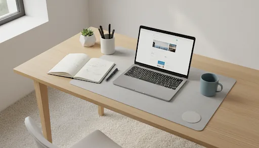

Webサイト制作
企画・構成・デザイン・実装・公開後の更新まで。小さなサイトから運用を見据えたサイトまで。

A web partner for the in-between
Sirona Designは、Webサイトを軸にデザイン・コーディング・運用・撮影・小規模アプリまで横断して伴走する制作パートナーです。
約17年の現場経験と、AIを含む新しい道具の検証を組み合わせ、まだ整理されていない相談を「動くもの」へ落とし込みます。
プロジェクトの話をする中村 浩樹
Freelance Engineer / Web Designer
Osaka, Japan / Remote available
A selection of places, products and experiments
業種も規模も違う。だから、正解も一つではない。
画像を選ぶと、設計の背景まで開きます。
From first question to live page
企画・構成・デザイン・実装・公開後の更新まで。小さなサイトから運用を見据えたサイトまで。
伝えたいことを一つに絞り、見つけてもらう・理解してもらう・動いてもらう流れをつくります。
既存サイトの整理、更新フローの改善、AIを使った試作と検証。現場に残る形へ整えます。
How I work
言葉になっていない困りごとまで聞き、目的と制約を一緒に見つけます。
画面や導線を早い段階で可視化。触れるものを見ながら判断できるようにします。
実際の使い方に合わせて磨き、公開後も更新しやすい仕組みとして残します。
AIは目的ではなく、考える速度を上げる道具。生成・検証・修正を繰り返し、最後は人が使える品質まで整えます。
Have a question?
サイトを作りたい、今のサイトを整えたい、何から始めればいいかわからない。そんな段階から大丈夫です。
hello@sironadesign.net